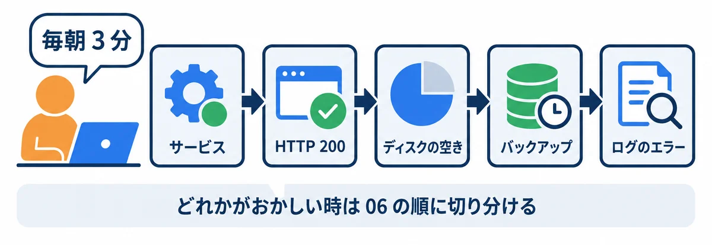

色の付いた枠のコードの、右上の「コピー」ボタンを押してください。コピーしたら、ブラウザーの「戻る」で PDF に戻れます。
サーバーを建てたあと、毎日の確認・困った時の切り分け・更新や片づけで打つコマンドを、「やりたいこと」ごとに 1 か所に集めた早見表です。01〜06 の資料に散らばっているコマンドを、ここから引けるようにしました。
webapp-prod、検証は webapp-stg、PostgreSQL は postgresql-x64-18、IIS は W3SVC、フォルダは D:\webapp\…（04 の 4.1）。webapp-stg）で試します。
| やりたいこと | 見る所 |
|---|---|
| 毎朝の確認を 3 分で済ませる | 1 章 |
| サービスを見る・止める・動かす・再起動する | 2 章 |
| 画面が開かない時に、どこまで届いているか調べる | 3 章 |
| ログを見る・エラーを探す | 4 章 |
| ディスクの空き・フォルダの大きさ・古いファイルの片づけ | 5 章 |
| コピー・圧縮・ファイルが同じか確かめる | 5 章 |
| データベースの状態・大きさ・つながっている数 | 6 章 |
| 更新・切り戻し・バックアップからの戻し方 | 7 章 |
| Windows の記録・予定の仕事・ファイアウォール | 8 章 |
4・5 章の例は、自分のパソコンの PowerShell で、そのまま試せます。先に、練習用のフォルダ ops-practice を作り、練習用のログとバックアップ（中身はダミー）を入れておきます。
cd ~
mkdir ops-practice
cd ops-practice
mkdir logs, backup\db, copy-from
# 練習用のログ（アプリのログの形をまねた物）
Set-Content logs\webapp.log -Encoding utf8 -Value @(
"2026-11-02 07:59:58 INFO サーバーを起動しました port=8080",
"2026-11-02 08:00:00 INFO 毎朝の通知: 3 件送りました",
"2026-11-02 09:12:41 WARN ログインに失敗しました user=012345",
"2026-11-02 09:15:03 ERROR データベースにつなげません: connection refused",
"2026-11-02 09:15:08 INFO データベースにつなぎ直しました"
)
# 練習用のバックアップ 4 つ（中身はダミー。作った日時だけ、昔の日付にする）
foreach ($day in "20261021", "20261022", "20261023", "20261101") {
$file = "backup\db\webapp_$day.dump"
Set-Content $file "練習用のダミー $day"
(Get-Item $file).LastWriteTime = [datetime]::ParseExact("$day 0200", "yyyyMMdd HHmm", $null)
}
# 練習用のコピー元
Set-Content copy-from\app.txt "version 1.1.0"
Set-Content copy-from\readme.txt "webapp"
▶ ここで初めて出てくるコード
mkdir（PowerShell）: 「make directory（フォルダを作る）」の略。mkdir ~\Documents\my-practice\01のように、途中のフォルダもまとめて作れます（~はホームフォルダC:\Users\you）。もう同じ名前のフォルダがあると、エラーで知らせます。Set-Content（PowerShell）: ファイルに文字を書くコマンド。Set-Content memo.txt "1 行目"で、ファイルを作るか、中身を置きかえます。後ろに書き足す時はAdd-Contentを使います。Set-Content -Encoding（PowerShell）:-Encoding utf8で、ファイルを UTF-8 という文字コードで書きます。Windows PowerShell 5.1 は、指定しないと古い文字コード（Shift_JIS）で書くので、日本語を書く時は付けておくと安心です。Set-Content -Value（PowerShell）:-Value 中身で、ファイルに書く中身を指定します。@' … '@で囲むと、何行もの文章をそのまま中身にできます（ヒア文字列）。Get-Item（PowerShell）: ファイルやフォルダ 1 つの情報（名前・大きさ・日時）を取り出すコマンド。
終わったら、cd ~ → Remove-Item ops-practice -Recurse で片づけます。
毎朝、次の 5 つを上から順に見ます。どれか 1 つでもおかしければ、06 の 2 章の順に切り分けます。
| # | 見る物 | 打つコマンド（管理者の PowerShell） | 正しい時 |
|---|---|---|---|
| 1 | サービスが動いているか | Get-Service webapp-prod, webapp-stg, postgresql-x64-18, W3SVC |
4 つとも Running |
| 2 | アプリが返事をするか | curl.exe -s -o NUL -w "%{http_code}" http://127.0.0.1:8080/health |
200 |
| 3 | 受付（IIS）を通しても返事をするか | curl.exe -s -o NUL -w "%{http_code}" -H "Host: webapp.example.local" http://127.0.0.1/health |
200 |
| 4 | ディスクの空き | Get-Volume -DriveLetter C, D |
空きが 20% 以上 |
| 5 | ゆうべのバックアップ | Get-ChildItem D:\webapp\backup\db | Sort-Object LastWriteTime -Descending | Select-Object -First 1 |
今日の日付の 2:00 ごろ |
| 6 | ログのエラー | Select-String -Path D:\webapp\prod\logs*.log -Pattern "ERROR" | Select-Object -Last 5 |
何も出ない（出たら中身を読む） |
メモ: 毎日打つなら、06 の 2.1 の「まとめて確かめるスクリプト」を使うと、1 回で全部見られます。
| やりたいこと | コマンド | メモ |
|---|---|---|
| 状態を見る | Get-Service webapp-prod |
Status が Running（動いている）・Stopped（止まっている） |
| 名前の一部で探す | Get-Service postgresql* |
* は「何でもよい」 |
| 動かす | Start-Service webapp-prod |
管理者の PowerShell で |
| 止める | Stop-Service webapp-prod |
本番は、決めた時間に |
| 再起動する | Restart-Service webapp-prod |
設定ファイルを変えたあとなど |
| 起動の種類を見る | Get-Service webapp-prod | Select-Object Name, StartType |
Automatic なら、Windows の起動時に自動で動く |
| サービスを動かしているアカウント | Get-CimInstance Win32_Service -Filter "Name='webapp-prod'" | Select-Object Name, StartName |
04 の 4.3 の仮想アカウントになっているか |
| WinSW で状態を見る | D:\webapp\prod\service\webapp-prod-service.exe status |
WinSW を使った時（04 の 7 章） |
▼ 実行結果（Get-Service postgresql*）
Status Name DisplayName
------ ---- -----------
Running postgresql-x64-18 postgresql-x64-18 - PostgreSQL Serv...
DisplayName は、長いと ... で切られます。全部見たい時は Get-Service postgresql* | Format-List * です。▼ 確かめること（Restart-Service webapp-prod のあと）
Get-Service webapp-prod が Running に戻る（数秒かかることがある）。curl.exe が 200 を返す。Running にならない時は、D:\webapp\prod\logs\webapp-prod-service.err.log の最後を読みます（06 の 5.9）。画面が開かない時は、手前（サーバーの中）から順に確かめます（06 の 2 章）。
| やりたいこと | コマンド | 正しい時 |
|---|---|---|
| アプリに、サーバーの中から直接 | curl.exe -s -o NUL -w "%{http_code}" http://127.0.0.1:8080/health |
200 |
| IIS を通して、サーバーの中から | curl.exe -s -o NUL -w "%{http_code}" -H "Host: webapp.example.local" http://127.0.0.1/health |
200 |
| 返事の中身も見る | curl.exe -s -i http://127.0.0.1:8080/health |
1 行目が HTTP/1.1 200 OK |
| その番号で待ち受けているか | Get-NetTCPConnection -State Listen -LocalPort 80, 8080, 5432 |
番号ごとに行が出る |
| 待ち受けているプログラム | Get-Process -Id （OwningProcess の番号） |
アプリ・IIS・postgres |
| ほかの PC から、その番号へつながるか | Test-NetConnection webapp.example.local -Port 80 |
TcpTestSucceeded : True |
| 名前が IP アドレスに変わるか | Resolve-DnsName webapp.example.local |
サーバーの IP アドレス |
| ファイアウォールの決まり | Get-NetFirewallRule -DisplayName "webapp*" | Select-Object DisplayName, Enabled, Direction, Action |
80 番の受信が True・Allow（04 の 9 章） |
▼ 実行結果（PostgreSQL の 5432 番。この PC で）
Test-NetConnection 127.0.0.1 -Port 5432 -InformationLevel Quiet（Quiet を付けると、True・False だけが出る）:
True
Get-NetTCPConnection -State Listen -LocalPort 5432 | Select-Object LocalAddress, LocalPort, OwningProcess:
LocalAddress LocalPort OwningProcess
------------ --------- -------------
:: 5432 6900
0.0.0.0 5432 6900
LocalAddress の読み方: 0.0.0.0 と :: は「どの宛先から来ても受ける」、127.0.0.1 は「サーバーの中からだけ受ける」です。本番の PostgreSQL は、サーバーの中からだけ受けるように絞ります（04 の 5.3。この PC は練習用なので絞っていません）。OwningProcess の 6900 は、プログラムの番号です。Get-Process -Id 6900 で名前が分かります（番号は起動のたびに変わります）。HTTP の返事の番号（よく出る物）:
| 番号 | 意味 | まず疑う所 |
|---|---|---|
200 |
成功 | — |
302 |
別のページへ移る（ログインの画面へ、など） | ふつうの動き |
400 |
頼み方がおかしい（Host が違う、など） | IIS の Host 名・アプリの許可する Host（06 の 5.4） |
403 |
断られた | CSRF・権限（06 の 5.5） |
404 |
無い | URL・IIS のサイト（06 の 5.3） |
500 |
アプリの中のエラー | アプリのログ（06 の 5.6） |
502 |
IIS の先のアプリが返事をしない | アプリのサービスが止まっている（06 の 5.2） |
503 |
IIS のサイトが止まっている | IIS のサイト・アプリケーション プール（06 の 5.3） |
| やりたいこと | コマンド |
|---|---|
| 最後の 20 行 | Get-Content D:\webapp\prod\logs\webapp-prod-service.err.log -Tail 20 -Encoding utf8 |
増えるのを見続ける（Ctrl ＋ C で終わる） |
Get-Content D:\webapp\prod\logs\webapp-prod-service.out.log -Tail 5 -Wait -Encoding utf8 |
| 言葉で探す（何行目かも出る） | Select-String -Path D:\webapp\prod\logs*.log -Pattern "ERROR|WARN" -Encoding utf8 |
| 見つかった数 | (Select-String -Path ... -Pattern "ERROR").Count |
| IIS のアクセスログ | C:\inetpub\logs\LogFiles\W3SVC（サイトの番号）\u_ex（日付）.log（読み方は 06 の 3.1） |
| PostgreSQL のログ | D:\pgsql\18\data\log\ の、いちばん新しいファイル（06 の 3.2） |
| ログの場所と、たまりすぎを防ぐ方法 | 04 の 12.2 の表 |
▼ 実行結果（練習のフォルダで Get-Content logs\webapp.log -Tail 3 -Encoding utf8）
2026-11-02 09:12:41 WARN ログインに失敗しました user=012345
2026-11-02 09:15:03 ERROR データベースにつなげません: connection refused
2026-11-02 09:15:08 INFO データベースにつなぎ直しました
▼ 実行結果（Select-String -Path logs\webapp.log -Pattern "ERROR|WARN" -Encoding utf8）
logs\webapp.log:3:2026-11-02 09:12:41 WARN ログインに失敗しました user=012345
logs\webapp.log:4:2026-11-02 09:15:03 ERROR データベースにつなげません: connection refused
logs\webapp.log:4:... は「webapp.log の 4 行目」です。-Pattern "ERROR|WARN" の | は「または」です（正規表現という書き方）。-Encoding utf8 を付けます。 付けないと、Windows PowerShell 5.1 は UTF-8 のログを古い文字コードで読み、日本語が化けます。| やりたいこと | コマンド |
|---|---|
| ドライブの空き | Get-Volume -DriveLetter C, D |
| フォルダの大きさ（合計） | (Get-ChildItem D:\webapp\prod\logs -Recurse | Measure-Object Length -Sum).Sum / 1MB |
| 大きいファイルの上から 10 個 | Get-ChildItem D:\webapp -Recurse -File | Sort-Object Length -Descending | Select-Object -First 10 FullName, Length |
| いちばん新しいファイル | Get-ChildItem D:\webapp\backup\db | Sort-Object LastWriteTime -Descending | Select-Object -First 1 |
古いファイルを消す（先に -WhatIf で確かめる） |
Get-ChildItem D:\webapp\backup\db*.dump | Where-Object LastWriteTime -lt (Get-Date).AddDays(-14) | Remove-Item -WhatIf |
| フォルダを丸ごと同じにする（コピー） | robocopy コピー元 コピー先 /MIR |
| 圧縮する | Compress-Archive -Path フォルダ\* -DestinationPath 名前.zip |
| 展開する | Expand-Archive 名前.zip -DestinationPath フォルダ |
| 2 つのファイルが同じか | (Get-FileHash A).Hash -eq (Get-FileHash B).Hash |
▼ 実行結果（この PC の C ドライブ。Get-Volume -DriveLetter C | Select-Object DriveLetter, @{n="空き(GB)";e={[math]::Round($_.SizeRemaining/1GB,1)}}, @{n="全体(GB)";e={[math]::Round($_.Size/1GB,1)}}）
DriveLetter 空き(GB) 全体(GB)
----------- ------ ------
C 73.4 951.6
@{n="名前";e={計算}} は、「計算した列」を作る書き方です。バイトのままだと読みにくいので、1GB で割って GB にしています。▼ 実行結果（練習のフォルダで、いちばん新しいバックアップ）
Name LastWriteTime Length
---- ------------- ------
webapp_20261101.dump 2026/11/01 2:00:00 25
▼ 実行結果（10 月 25 日より古いバックアップを消すと、どれが消えるか。-WhatIf なので、本当は消さない）
What if: Performing the operation "Remove File" on target "C:\Users\you\ops-practice\backup\db\webapp_20261021.dump".
What if: Performing the operation "Remove File" on target "C:\Users\you\ops-practice\backup\db\webapp_20261022.dump".
What if: Performing the operation "Remove File" on target "C:\Users\you\ops-practice\backup\db\webapp_20261023.dump".
-WhatIf を付けると、「何をするはずか」を表示するだけで、本当には消しません。 消す対象が正しいと分かってから、-WhatIf を外して打ちます。本番の運用では (Get-Date).AddDays(-14)（今日から 14 日前）のように書きます（04 の 11.3 のスクリプトも、14 日より古いバックアップを消しています）。WhatIf: 対象 "…" に対して操作 "ファイルの削除" を実行しています。 のように日本語で出ることがあります。▼ 実行結果（robocopy copy-from copy-to /MIR /NP /NJH → $LASTEXITCODE）
New Dir 2 C:\Users\you\ops-practice\copy-from\
New File 15 app.txt
New File 8 readme.txt
------------------------------------------------------------------------------
Total Copied Skipped Mismatch FAILED Extras
Dirs : 1 1 0 0 0 0
Files : 2 2 0 0 0 0
Bytes : 23 23 0 0 0 0
Times : 0:00:00 0:00:00 0:00:00 0:00:00
Speed : 23,000 Bytes/sec.
Speed : 1.316 MegaBytes/min.
Ended : 2026年11月2日 15:26:13
1
/MIR は「コピー先を、コピー元とまったく同じにする」です。コピー元に無いファイルは、コピー先から消えます。 コピー元とコピー先を逆に書かないように気を付けます。/NP は進み具合（%）を出さない、/NJH は最初の見出しを出さない、という指定です。0（何もしなかった）・1（コピーした）〜7 は成功、8 以上が失敗です。スクリプトでは if ($LASTEXITCODE -ge 8) { 失敗 } と書きます（04 の 11.3）。▼ 実行結果（圧縮して、大きさを見る）
Compress-Archive -Path copy-from\* -DestinationPath backup\app_1.1.0.zip は何も表示しません。
Name Length
---- ------
app_1.1.0.zip 235
▼ 実行結果（コピーした 2 つのファイルが同じか）
8DA215143FD2F22146BC1218B40C36574CCEDE25869B00F5CA50C0A6EABCDA66
True
psql の入り方と SQL の練習は、02 にくわしく（実際の出力つきで）あります。ここでは運用でよく使う物をまとめます。
| やりたいこと | コマンド・SQL | メモ |
|---|---|---|
| 受け付けているか（ログイン無しで） | pg_isready -h 127.0.0.1 -p 5432 |
下の実行結果 |
| つなぐ | psql -h 127.0.0.1 -U webapp_prod_app -d webapp_prod |
02 の 2 章 |
| データベースの大きさ | SELECT pg_size_pretty(pg_database_size('webapp_prod')); |
02 の 12 章 |
| 今つながっている数 | SELECT state, count(*) FROM pg_stat_activity WHERE datname = 'webapp_prod' GROUP BY state; |
多すぎる時は、アプリの接続のたまりを疑う |
| 表ごとの行の数（だいたい） | SELECT relname, n_live_tup FROM pg_stat_user_tables ORDER BY n_live_tup DESC LIMIT 10; |
増え方を月ごとに見る |
| 長く動いている問い合わせ | SELECT pid, now() - query_start AS 時間, left(query, 60) FROM pg_stat_activity WHERE state = 'active' ORDER BY 2 DESC; |
遅い時（06 の 5.7） |
| バックアップを取る | pg_dump -h 127.0.0.1 -U webapp_prod_app -d webapp_prod -Fc -f D:\webapp\backup\db\手動_（日付）.dump |
更新の前に必ず（04 の 13.3） |
| バックアップの中身の一覧 | pg_restore -l ファイル.dump |
壊れていないかの確かめ |
| 戻す | pg_restore -h 127.0.0.1 -U … -d … --clean ファイル.dump |
手順は 02 の 11 章・04 の 11.5 |
| サービスの再起動 | Restart-Service postgresql-x64-18 |
設定を変えたあと。アプリもつなぎ直す |
▼ 実行結果（この PC で。受け付けている時 ／ 待っていない番号を指定した時）
127.0.0.1:5432 - 接続を受け付けています
127.0.0.1:5999 - レスポンスがありません
pg_isready は、パスワード無しで「受け付けているか」だけを調べます。終了コードは、受け付けていれば 0、返事が無ければ 2 です（スクリプトで使えます）。pg_isready が無いと言われた時は、C:\Program Files\PostgreSQL\18\bin を PATH に入れます（04 の 5.4）。▼ 確かめること（psql でつないで、大きさとつながっている数を見た時）
12 MB のように単位つきで出る。active（今、問い合わせ中）が 1 つ（自分）、idle（待っている）がアプリの分だけ出る。idle が何百もある時は、アプリのつなぎ方を疑う。くわしい手順は 04 の 13 章（Rust 版）・05 の 13 章（Django 版）にあります。ここでは、順番を忘れないための要点だけです。
| 場面 | 順番（要点） | 見る所 |
|---|---|---|
| 更新（新しい版を入れる） | ① 検証で確かめる → ② pg_dump でバックアップ → ③ Stop-Service webapp-prod → ④ 今の版を D:\webapp\releases\ に残す → ⑤ 新しい版を置く → ⑥ マイグレーション → ⑦ Start-Service → ⑧ 1 章の確認 |
04 の 13.3 |
| 切り戻し（前の版に戻す） | ① Stop-Service → ② 残しておいた前の版を置く → ③ 必要ならデータベースを ② のバックアップから戻す → ④ Start-Service → ⑤ 1 章の確認 |
04 の 13.4 |
| バックアップから戻す練習 | 検証のデータベースに pg_restore して、画面で中身を確かめる（年 1〜2 回） |
04 の 11.5・07 のチェック表 |
| やりたいこと | コマンド | 見る所 |
|---|---|---|
| システムのエラーを新しい順に 10 件 | Get-WinEvent -FilterHashtable @{LogName='System'; Level=2} -MaxEvents 10 |
01 の 7.3 |
| サービスが急に止まった記録 | Get-WinEvent -FilterHashtable @{LogName='System'; Id=7031,7034} -MaxEvents 10 |
01 の 7.2 |
| 前回の起動の時刻 | (Get-CimInstance Win32_OperatingSystem).LastBootUpTime |
再起動されたかの確かめ |
| 予定の仕事の一覧 | Get-ScheduledTask -TaskPath \webapp\ |
01 の 9.2 |
| 予定の仕事の前回の結果 | Get-ScheduledTaskInfo -TaskPath \webapp\ -TaskName 名前 |
LastTaskResult が 0 なら成功 |
| 予定の仕事を今すぐ動かす | Start-ScheduledTask -TaskPath \webapp\ -TaskName 名前 |
バックアップの試しなど |
| ファイアウォールの決まりの一覧 | Get-NetFirewallRule -Enabled True -Direction Inbound | Select-Object DisplayName, Action |
01 の 10.2 |
| サーバーの時刻と時間帯 | Get-Date・Get-TimeZone |
毎朝 8:00 の処理がずれる時（06 の 5.13） |
▼ 確かめること（Get-ScheduledTaskInfo でバックアップの仕事を見た時）
LastRunTime が今日の 2:00 ごろ、LastTaskResult が 0。0 以外の時は、D:\webapp\backup\logs\ の、その日のログを読みます（06 の 5.11）。